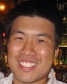

Innovating Social Change 29th November 2011, Columbia University
2011 TEDxColumbiaEngineering Team
Sheena Iyengar is the inaugural S.T. Lee Professor of Business and the Research Director of the Jerome A. Chazen Institute of International Business. A world renowned expert on the subject of choice, she says that choice can provide a sense of freedom and control that is essential to our well-being.
It is the most powerful tool we have to shape our lives, to go from who we are today to who we want to be tomorrow. Unfortunately, the misunderstanding and poor practice of choice often undermines its many benefits and leaves us frustrated, overwhelmed and unhappy. In her critically acclaimed book The Art of Choosing, called “refreshingly thought-provoking” by The New York Times and “a page-turning narrative that blends academic rigor with a pop culture sensibility” by The Boston Globe, Sheena shines a bright light on the many different facets of choice, exposing it in all its mystery, complexity and compelling beauty.

Andrew is a fourth year Ph.D. candidate in Biomedical Engineering in the Neurotrauma and Repair Laboratory under the guidance of Dr. Barclay Morrison III. Andrew is also currently the president of the Engineering Graduate Student Council (EGSC). His research focus is the development of functional, tissue-level tolerance criteria to better understand the causation of traumatic brain injury (TBI). He is also involved in developing and testing new electrode technologies for stable, long-term neural interfaces as well as investigating the therapeutic capabilities of cell-penetrating peptides to deliver cargoes for TBI treatment.
Mayank is a Graduate Student at the Industrial Engineering Operations Research Department, Columbia University. He was also the co-licensee and curator of the first tedx event by Columbia Engineering -"tedxcolumbiaengineeringschool" which was held in spring 2011. Meeting new people and exploring new ideas has always been his passion, he has represented Columbia at various international forums including Clinton Global Initiative University held at San Diego. Mayank was the student ambassador for NCIIA(www.nciia.org)and helped in fostering student entrepreneurship in the campus. He loves to swim, play ping pong and follow tech trends.
my2320@columbia.edu
@mayankspeaks
@mayankspeaks
Dmitriy is a senior at Columbia University studying Biomedical Engineering. At Columbia, he is the student ambassador for the
National Collegiate Inventors and Innovators Alliance (www.nciia.org) and is also president of the New York Alpha chapter of Tau Beta Pi.
He has been involved in research since he was a student at Stuyvesant High School and is currently a member of Professor Elizabeth Hillman's Laboratory
for Functional Optical Imaging. Dmitriy was born in Ukraine and is interested in the potential of technological innovation in the
developing world. As part of this goal, he has been involved with Engineers without Borders and CatarAct International.
His non-academic interests include hiking, playing chess, and reading.
LinkedIn profile: here
@DmitriyTimerman
LinkedIn profile: here
TED profile: here
dt2276@columbia.edu@DmitriyTimerman
Ryan is a Columbia Engineering Senior studying biomedical engineering and is the founder and Editor-in-Chief of the Journal of Global Health. He is interested in infectious diseases and low-cost diagnostic technologies for their early-detection. Ryan is also the President of the Biomedical Engineering Society and leads an enrichment class for Harlem high school students titled 'Innovation in Medicine.' In his free time, Ryan is an avid traveler and recently completed an expedition to Machu Picchu on the Inca Trail.
Charlotte is a senior at Barnard College studying economics and political science. She is interested in how technology is changing the landscape of social engagement in business and in politics. While attending college in New York City, Charlotte has had internships at several media related companies including at Outside.In (now part of AOL's Patch.com) and The Colbert Report. She currently works at LaunchSquad, a PR firm that specializes in executing communications strategies for emerging technology companies. She also speaks Mandarin Chinese. In her free time, Charlotte enjoys tweeting, traveling, and skiing with her friends on the Columbia University Ski and Ride Club.
cac2182@columbia.edu
@charlottecrwfrd
cac2182@columbia.edu
@charlottecrwfrd
Genevieve is a second-year Ph.D. student in the Department of Biomedical Engineering and an NSF Graduate Research Fellow.
Her research seeks to understand the mechanisms by which bone cells sense and respond to mechanical stimuli so we may discover new
treatments for diseases like osteoporosis. Genevieve is also interested in improving the presentation of technical information,
so she is quite fond of TED!
Akshay is a sophomore in the School of Engineering studying Electrical Engineering. He is very passionate about technology
and startup companies. After working for a star up company in his hometown, Bangalore, he has launched his own start up in
collaboration with a classmate. His company acts as a wrapper user interface for Facebook Events.
His website is called: http://www.eventsalsa.com/ and it is currently at the beta testing stage.
He is the President of the Engineering class of 2014 and is also a part of the Columbia Model United Nations travel team.
ars2212@columbia.edu
LinkedIn: here
@AR_Shahars2212@columbia.edu
Alessia Morales is a senior at Columbia College, double-concentrating in English and philosophy. She has a background in marketing, media, and technology and is currently interning at foursquare. A speaker of Spanish and French, she is excited to be back on Columbia's campus after spending her spring semester abroad in Paris, France. In her free time, Alessia enjoys discovering new restaurants, jogging, and going to the movies.
Sonal is a 2011 Masters candidate in Electrical Engineering at Columbia University. She is a part of Professor Gil Zussmanís Research team (EnHANTs) at Columbia University where she has worked on a wide variety of projects involving energy harvesting and wireless sensor networks. Her current research deals with exploring the potential of motion energy to independently power tags and further enable energy efficient network models - her approach to innovating for social change.
As the Career and Alumni Chair of the Engineering Graduate Student Council (EGSC) she spearheads the organisation of 'Tech talks' which is a very successful biweekly event at Columbia. They have managed to bring in companies like IBM, Intel, Dupont, Alcatel- Lucent, and Microsoft among several others to talk about "What it is like to be an Engineer?"
In her free time, Sonal enjoys reading books, gyming and dancing. She has been formally trained to perform an Indian form of Classical dance, Bharatnatyam since the age of 6.
LinkedIn: here
http://www.columbia.edu/~sss2192
sss2192@columbia.edu
LinkedIn: here
http://www.columbia.edu/~sss2192
sss2192@columbia.edu
Kurry is currently a senior at Columbia University studying Computer Engineering. Kurry came to Columbia after receiving his B.A. in Economics and Mathematics from Wesleyan University in 2010. Kurry's research focus is public health and high performace computing and he is also an expert iOS/HTML5 programmer.
http://www.kurrytran.comklt2127@columbia.edu
@kurrytran
Kay is a sophomore in the Joint Program between JTS and the Columbia School of General Studies. She is interested in graphic design and its impact. Kay is also a staff member on the design and layout teams of the Journal of Global Health and the Columbia Spectator. In her free time, she enjoys drawing and hiking.
Dylan H. Drop
Health Committee
Jon Bernhard
Nikhil Joshi
Jordan Lebovic
Zen Liu
Brendan Roach
Andrea Tan
Publicity Committee
Vanessa Nieto
Rebecca Alexandre
Tristin Moone
Sponsorship Committee
Brendan Roach
Brian Kelly
-

Kathryn Bache Miller Theatre
November 29th, 2011
09:00am - 5:00pm
2960 Broadway, New York, NY 10027
-
Stay In Touch
Links
-
Licensing
- This independent TEDx event is operated under license from TED.
Contact Us